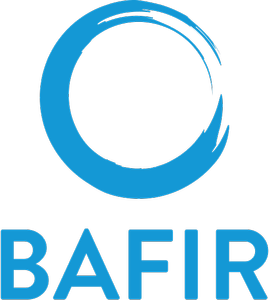

Soluciones inteligentes para Certificados de Ahorro Energético
Bafir Energy te ayuda a obtener y gestionar Certificados de Ahorro Energético (CAE) de forma rápida, segura y profesional. Conectamos a propietarios, instaladores y obligados energéticos para maximizar el ahorro y acelerar la transición ecológica.
Somos expertos en eficiencia energética y actuamos como tu socio estratégico. Nuestro objetivo es que tus proyectos obtengan la máxima rentabilidad y el mínimo esfuerzo administrativo.